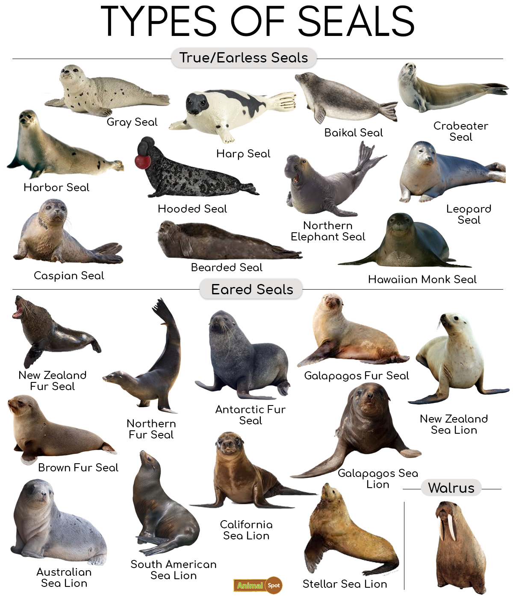

Seals are fascinating marine mammals, with 33 different species found across the globe. They belong to a group called pinnipeds, which also includes sea lions and walruses. Seals are divided into two main types: true seals, which lack visible ear flaps and move awkwardly on land, and eared seals, which have small ear flaps and can walk more easily using their flippers. These animals live in a wide range of coastal environments in both hemispheres, from icy polar regions to sandy beaches. Most seals feed on fish, squid, and crustaceans, while larger species like the leopard seal can hunt penguins and even other seals. Known for their impressive abilities, seals can dive hundreds of meters deep, hold their breath for up to half an hour, and use their sensitive whiskers to detect movement in the water. Many species live around 20-30 years, making them long-lived and highly adapted ocean predators.
You can learn more about the different species of seals at NOAA Fisheries .
